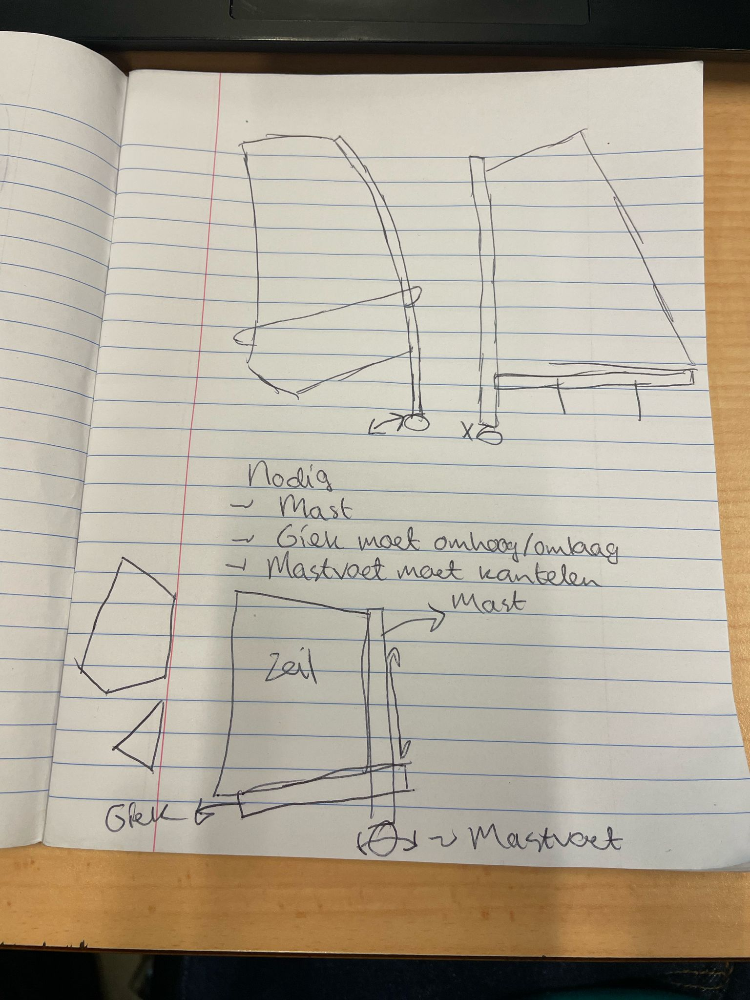
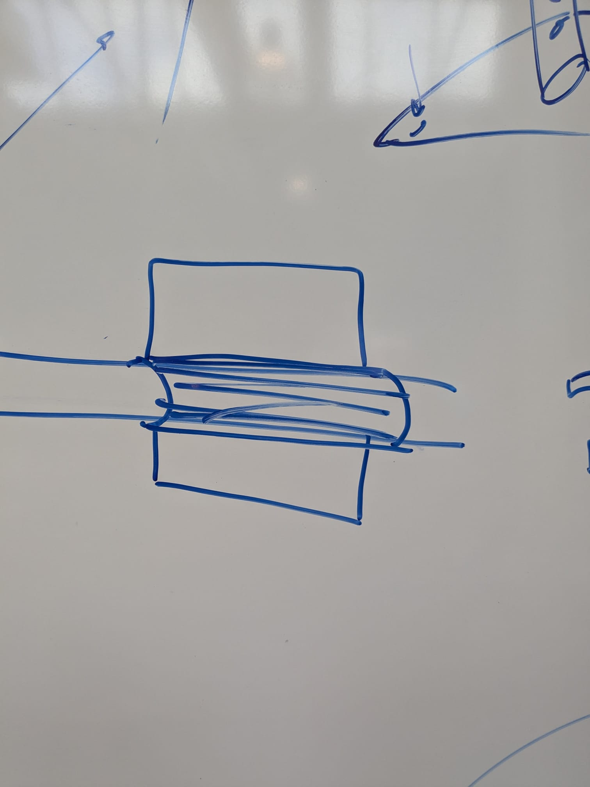

I worked together with Arend Heijn, Madelon Gorter, Marije Kok, and Melissa van der Pol as group 15.
From our first selection of problems, we wanted to make something to help with the unintuitiveness of cars (following some group members' experiences with broken down cars in unfortunate moments). We wanted to make something to help people gain a kind of intuition for how a car works.
After pitching and reflection, while a certain mindset might be applicable, the type of sessions you end up with eventually become quite close-ended, more like a teaching session than a tinkering one.
To increase tinkerability, we refined our scope to the concept of energy transformation as it happens in a combustion engine; pressure to movement. Our main technical hurdle in this phase was the difficulty of creating an actually working piston + crankshaft system. Our building block would be this component, and through a life-size scale this building block would have an inviting affordance, allowing participants to transform muscle force to pressure to movement. A wide range of other components would be supplied so that participants could use this movement to create whatever they deemed cool.
To keep with the theme of energy transfer while making the idea more feasible, we switched from pistons to sails. This was easier to realize because of the following two reasons: 1) most of our group members have access to some handy materials for this 2) this requires less precision materials (a piston needs to be airtight for example), so prototyping it is more forgiving.
Finding the balance of what to pre-design and what to leave to be tinkered with was a big part of deciding what building blocks to design, and something which greatly determines how 'tinkerable' the final product will be.
We decided that the parts we should 'make easy' are mainly concerned with structural aspects; it should be up to participants to come up with a cool way to harness the wind (by creating a certain shape of sail for example) and to transfer it to whatever they want to do with it. What they should not have to worry about is attaching sail cloth to a mast, securely mounting a mast to their machine, or creating the frames of their machines. Thus, we need a system which allows users to quickly and easily whip up structurally sound bases with which to carry out their idea. What we then need to design are connectors for attaching rods/masts to each other and the structure, and a way to easily attach sail cloth to those rods.
The final version has 3D printes connectors, and mast material of PVC with foam, which makes for a better connection with the clips.
In the duration of this course, I feel like I have, for myself, identified a very clear idea of where tinkering is useful; as a tool of empowerment, to a certain extent at least.
In the examples I have encountered, a tinkering solution would not be a sustainable one, and could never be a full replacement of someone with the “proper” knowledge and materials. For example, my hook and loop fabric prototyping; an experienced tailor would most likely be able to do a better and more efficient job with traditional methods. Some of the tested tinkering are similar in this; they could never be a replacement for an experienced welder building a frame. Our final tinkering setup could never produce a windsurfing set that is even slightly optimised or practical.
However, this was of course never the goal of tinkering. Crucially, in all situations, the work done by the tinkering facilitators has allowed people who knew nothing about sewing, about frame building, about sail construction, to make something nonetheless. From what we were taught, this is merely a function of tinkering to get to the ideas that are in those non-experts’ heads, but I think it is something that should be made explicit. Tinkering, at least in one perspective, is a tool that can empower people who have ideas, but not the formal skills with which to realise those ideas.